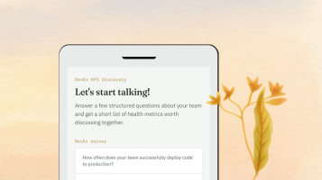
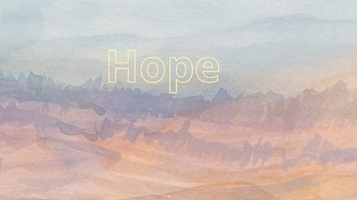

Learn how we can form a plan working together towards a vision, guided by your values and your most important metric.
Get inspired
Better understand what gets in the way of the team delivering and get started with improving that.
Try the tool
What do we need to adapt to find real sustainable solutions for recurring organizational challenges.
Watch or Read moreConnection leading to shared vision, building trust, creating space for vulnerability and a sense of belonging and community.
Making space for divergence and finding the right time to guide towards convergence
I give what I can, and take just as much as I need. With respect and appreciation towards the gifts of others, and nature.
Finding balance between intervening and letting things play out, allowing space for difficult feelings, while working towards where we want to go.